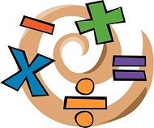
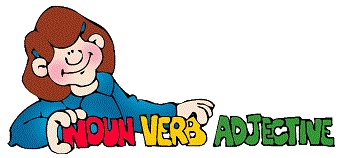

Math Section
Use arrow keys
Use the arrow keys to redirect the movement of the muncher into the correct answer. If a munching sound is played, you have selected the correct answer and a new math problem will appear at the top of the screen.
Try to avoid running into the boundaries, incorrect answers, and also into MAX, an enemy character who will try to eat you.

Grammar Section
Use mouse
A sentence will be given where each word can be clicked by the mouse. If the part of speech selected is a verb, you will need to click a single verb in the sentence to receive a correct answer.
You will have the option of returning to the main menu screen at any time or restarting a game once the current game has ended.